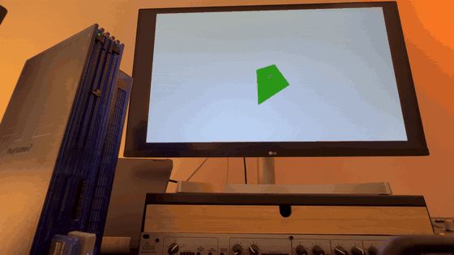
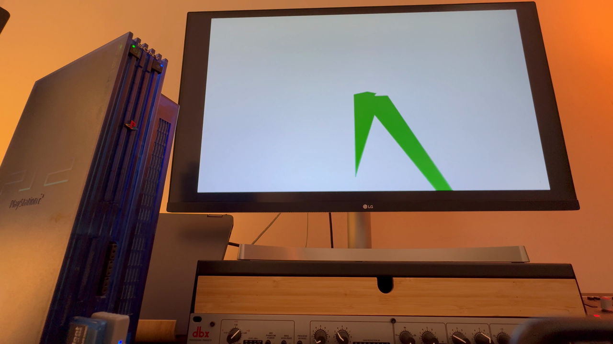

pantheon-ps2-world-4587.gif — from IMG_4587.MOVOpen this file in your browser (double-click from Desktop, or drag into a tab). Images load from the same folder as this HTML.
This file:
Windows (Explorer): paste in the address bar — \\wsl.localhost\Ubuntu\home\marvin\Pantheon\docs\media\VIEW_PANTHEON_MEDIA.html

pantheon-ps2-boot-4586.gif — from IMG_4586.MOV
pantheon-ps2-world-4587.gif — from IMG_4587.MOV
pantheon-hero-boot-4586.png
pantheon-hero-world-4587.png — good default for landing heroThese are gitignored; they live next to the repo root. Click to open in your default player (if the path exists on this machine).
github.com/94BILLY/Pantheon — WordPress landing: docs/pantheon-landing.html